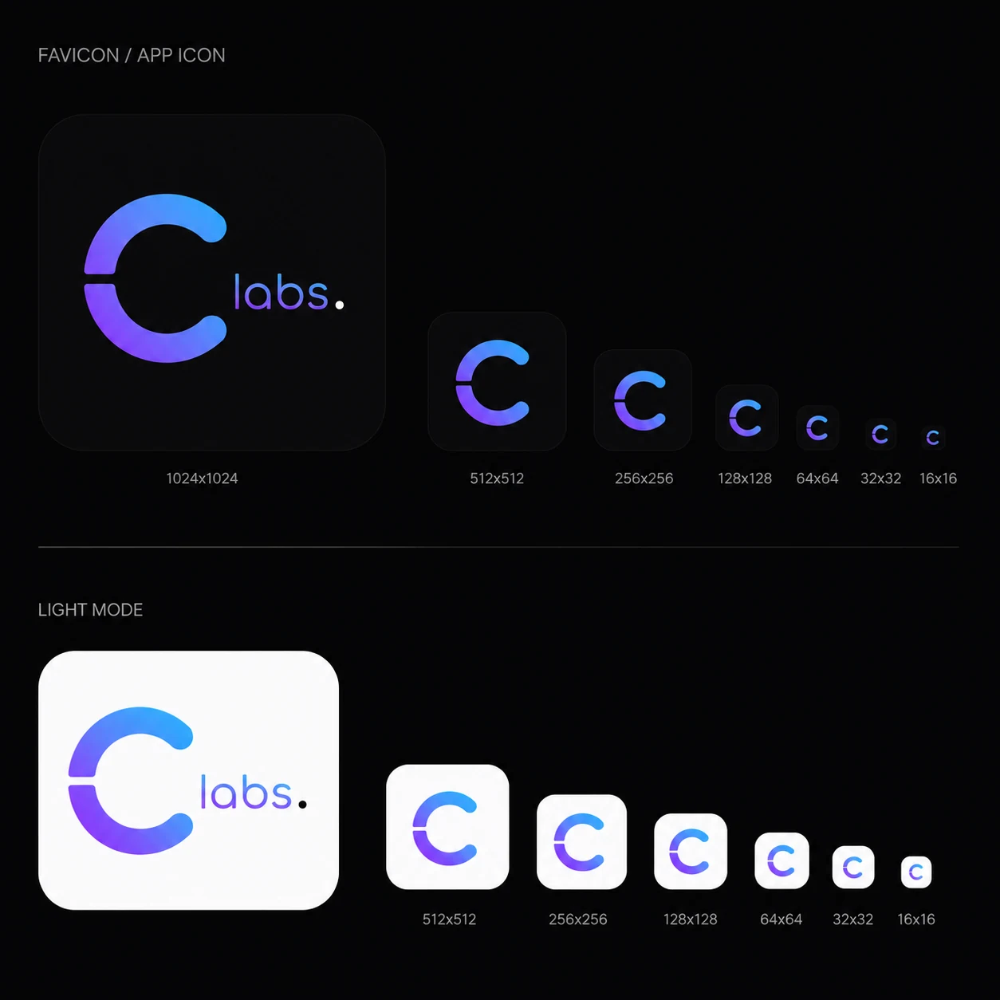
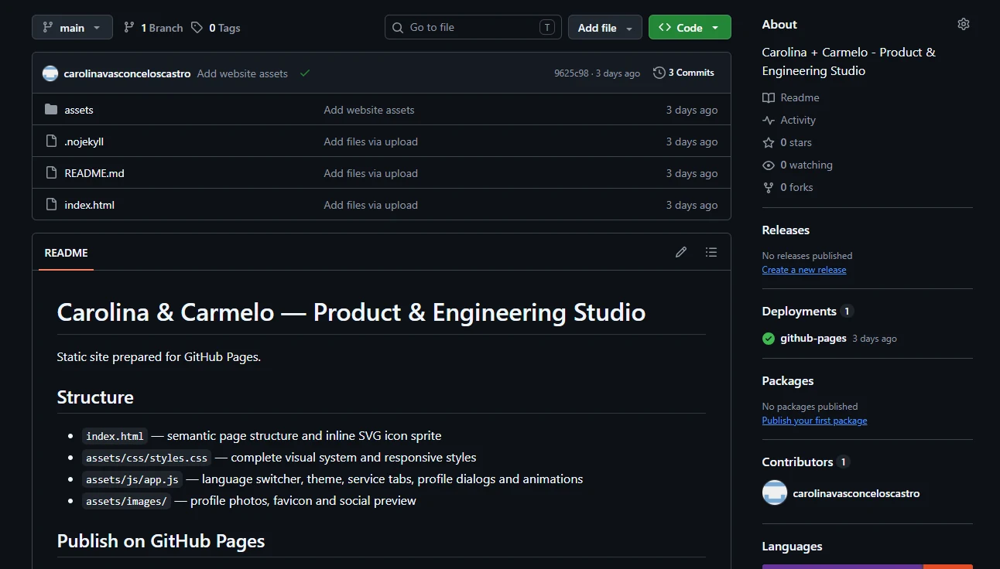

A freelance website.
A place to show two profiles, list skills and provide contact details.
A worked example of how we think
The website was only the visible output. The real work was turning two complementary senior profiles into a proposition the market could understand, trust and hire.
01
The ambiguous brief
“We had two complementary senior profiles, but no clear way to package, explain and sell their combined value.”
A place to show two profiles, list skills and provide contact details.
The challenge was differentiation: making years of shared context, complementary depth and 360° product thinking visible without exposing confidential client work.
02
Market exploration
The goal was not to copy another studio. It was to identify the category signals that reduce explanation and the gaps where our own positioning needed to be specific.
Signal: human-centred design and technical expertise presented as one full-stack product capability.
LearningRecognisable and credible, but the category can still feel design-led.
Official siteSignal: product strategy, design, development, platform work and team enablement across the lifecycle.
LearningBreadth is credible when it is organised around product stages and client needs.
Official siteSignal: outcome-first language focused on solving complex problems rather than describing a long service list.
LearningPremium positioning comes from clarity and proof, not decorative complexity.
Official siteSignal: direct senior access, fewer agency layers and less context loss between product and implementation.
LearningThe model explains embedded support well, but works better for us as a collaboration format than as a lead service.
Official siteDecision
Let the differentiation come from the problems we solve, our shared working context and the way product and technology stay connected.
03
Testing the first idea
The idea captured our mindset, but it asked the buyer to decode the category before understanding the offer.
Distinctive was not the same as clear.
04
Choosing the focus
We started with a better question: where does our combination create an advantage that a client can recognise?
05
Designing credibility
Familiar interaction patterns reduced effort. A proprietary blue–purple identity, related portraits and consistent light/dark states made the two profiles feel intentionally connected.
Complex software,
made clear.Fast to build and useful for testing content, but long, dark and still close to a list of services.
Product clarity.
Engineering depth.The first screen explained more, profiles became visible earlier and the layout used familiar component patterns.
Two specialists.
One accountable team.The system moved to a proprietary blue–purple language, stronger contrast, accessible states and a more focused proposition.

Visual decisions
06
MVP and evolution
The first version was deliberately monolithic. It made content and positioning cheap to change. Modularity arrived only when languages, themes, profile dialogs, visual assets and new pages created real maintenance pressure.
Right for rapid iteration while the proposition was still changing.
Structure, presentation, behaviour and assets can now evolve independently.

MVP means delaying complexity — not avoiding good foundations forever.
07
Scope decisions
We separated what was necessary to validate the proposition and start conversations from what would only make the studio look more finished. These items were deferred, not forgotten.
We kept Carolina & Carmelo and a recognised category while the proposition was still being tested. A permanent name should follow clarity, not replace it.
GitHub Pages was enough to publish and learn. A domain and branded inbox become valuable once the final name is worth committing to.
The current mark, palette and interface system create coherence. A full identity manual, templates and broader launch assets would add polish, but not validate the offer.
We did not manufacture portfolio evidence from confidential company work. More public cases will be added when there is permission or new work that can be shown properly.
08
What this example demonstrates
Client work involves deeper systems and constraints, but the same reasoning remains visible here.
The requested output is not always the real problem.
Market language helps separate novelty from useful differentiation.
A buyer should understand the value before interpreting the brand.
Experience, architecture and delivery shape each other.
Validate the proposition before paying for optional complexity.
The foundation grows when real maintenance and product needs justify it.
Bring us the difficult part
Let’s discuss how to turn it into a focused product direction and a technical foundation your team can build on.